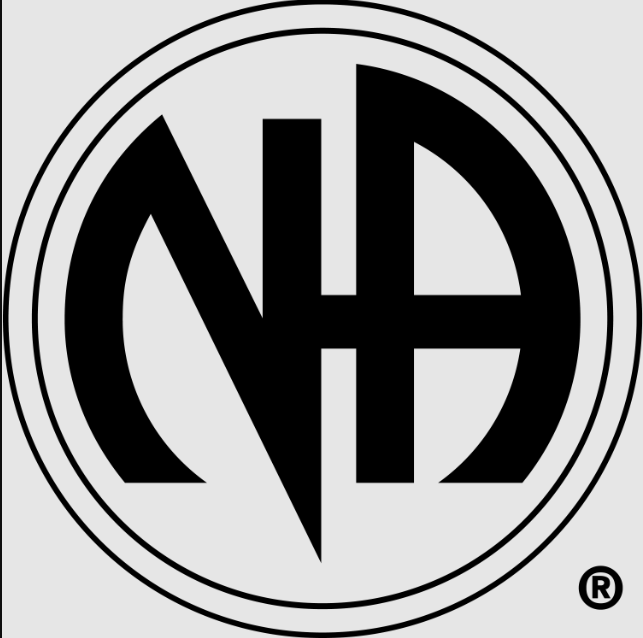

Grupos de Apoio

Narcoticos Anônimos
"Narcóticos Anônimos" (NA) é uma organização mundial que oferece suporte e ajuda para pessoas que estão lutando contra a dependência de drogas.
Saiba MaisAlcoólicos Anônimos
Conhecida organização Alcoólicos Anônimos, que oferece apoio para pessoas com problemas relacionados ao alcoolismo. Reuniões são realizadas em diversas cidades e há uma rede de suporte para os participantes.
Saiba MaisCentro de Atenção Psicossocial
O Centro de Atenção Psicossocial é uma instituição brasileira que visa à substituição dos hospitais psiquiátricos - antigos hospícios ou manicômios - e de seus métodos para cuidar de afecções psiquiátricas.
Saiba Mais